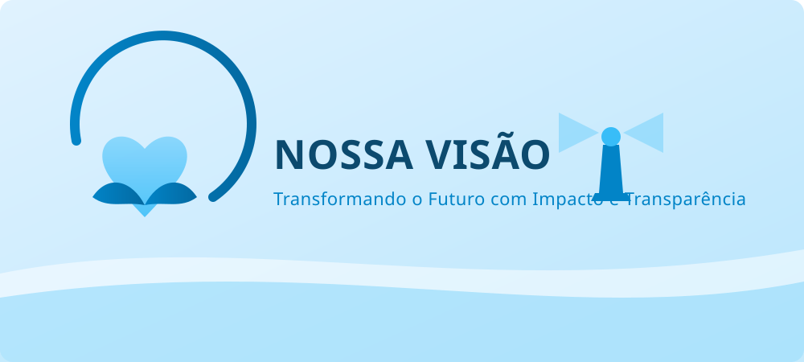
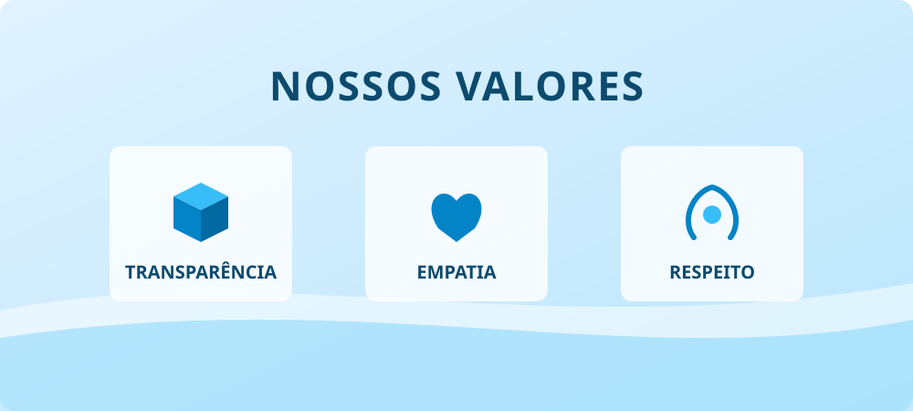

Nossa Missão
Promover a inclusão social e o desenvolvimento sustentável por meio de ações educativas e de combate à vulnerabilidade.
Atuamos na garantia de direitos, combate à fome e promoção da educação em comunidades vulneráveis.
`Promover a inclusão social e o desenvolvimento sustentável por meio de ações educativas e de combate à vulnerabilidade.

Ser referência nacional em transparência, impacto comunitário e engajamento voluntário até 2030.

Transparência, empatia, respeito aos direitos humanos e compromisso socioambiental.